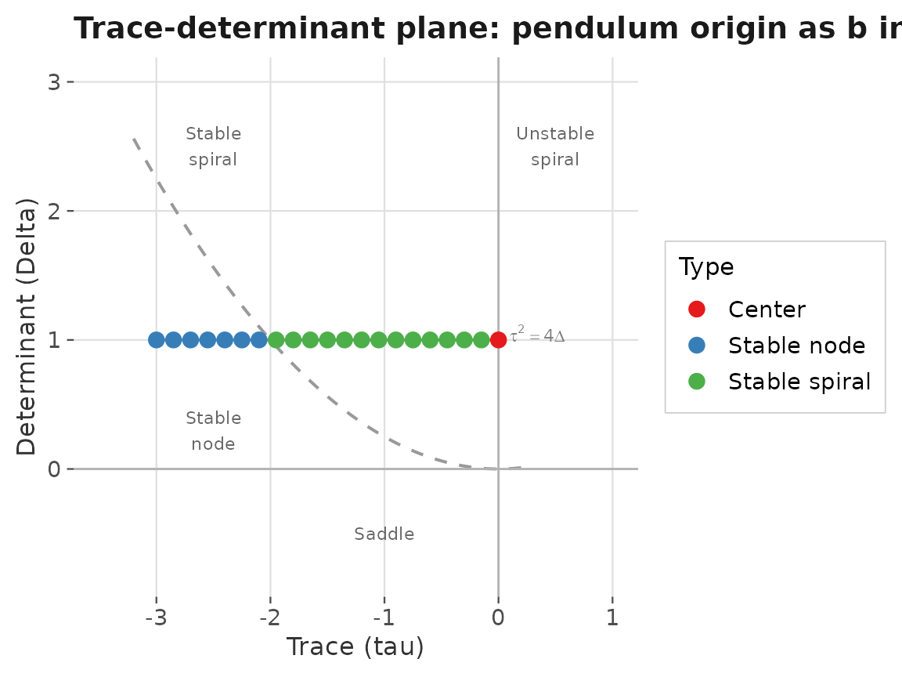
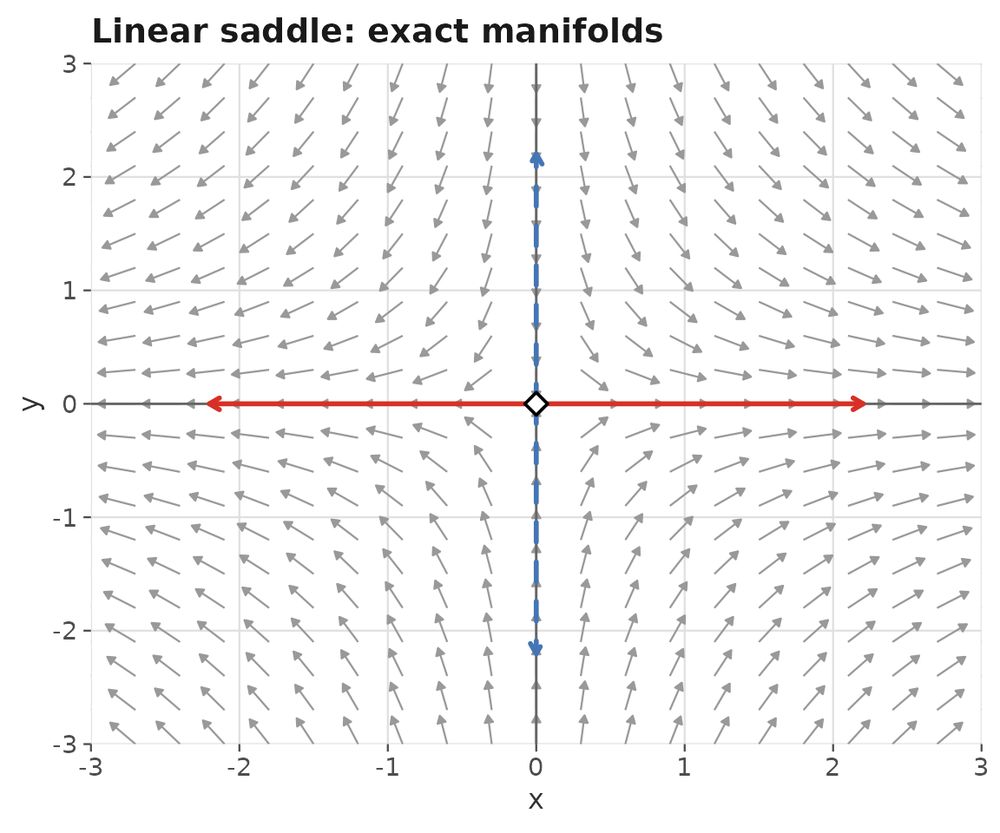
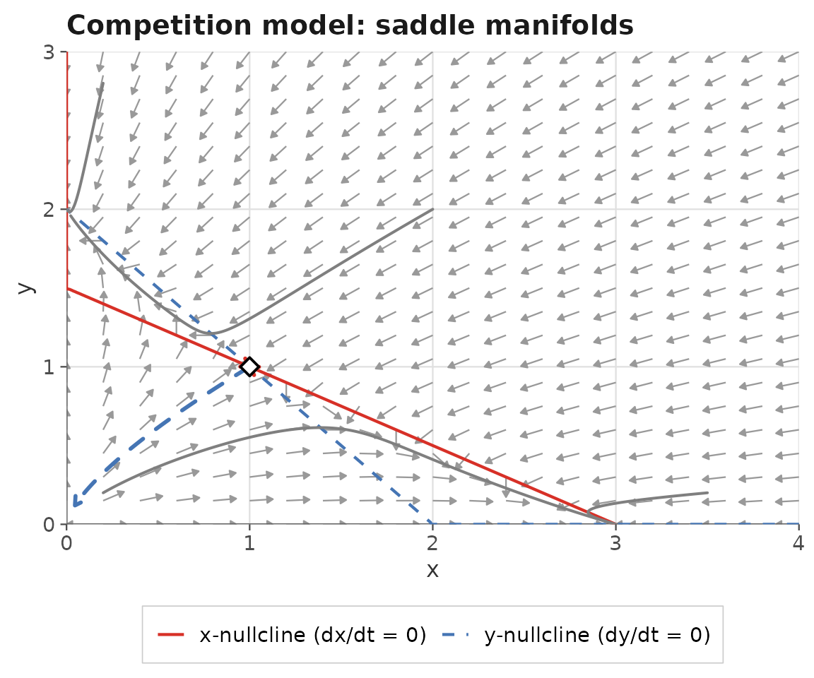
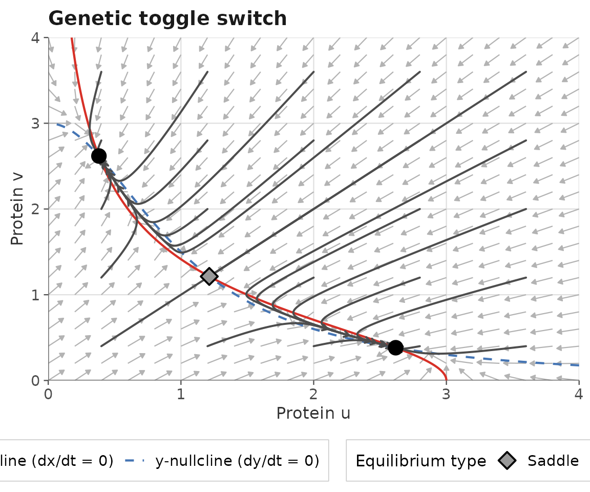
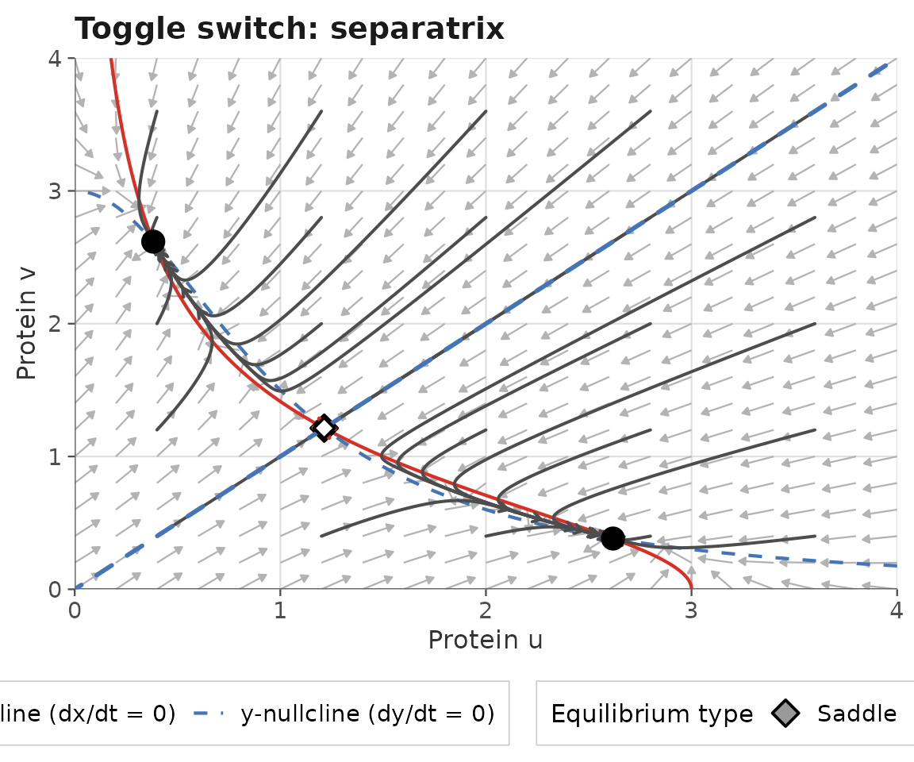
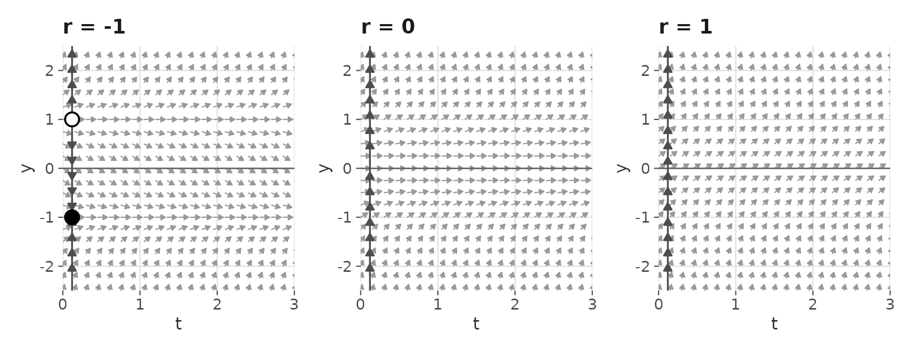

Introduction
An equilibrium point (also called a fixed point or steady state) of an autonomous ODE system is a state where all derivatives vanish simultaneously:
Knowing the location and stability type of each equilibrium is central to understanding the qualitative behavior of a system — it tells us where trajectories end up, how they approach or depart from rest states, and how the system responds to perturbations.
This vignette covers:
- Finding equilibria numerically with
find_equilibrium() - The Jacobian matrix and linearization
- Classifying equilibria with
classify_equilibrium() - The trace-determinant plane
- Drawing stable and unstable manifolds with
gg_manifolds() - A complete worked example: the nonlinear competition model
- Bifurcation preview: how equilibrium type changes with parameters
1 Finding equilibria numerically
For simple systems, equilibria can often be found by hand. For
nonlinear systems, numerical root-finding is more reliable.
find_equilibrium() uses Newton–Raphson iteration (via
rootSolve::multiroot()) to locate equilibria from one or
more starting points.
1.1 Single starting point
lv_params <- c(alpha = 1, beta = 0.5, delta = 0.5, gamma = 1)
# Known interior equilibrium near (2, 2)
eq_interior <- find_equilibrium(
ode_lotka_volterra,
y0 = c(1.5, 1.5),
parameters = lv_params
)
eq_interior
#> [[1]]
#> [1] 2 21.2 Grid search for multiple equilibria
When a system has several equilibria and their locations are not
known in advance, use y0 = NULL to trigger an automatic
grid search. find_equilibrium() places starting points on a
regular grid over xlim × ylim, runs
Newton–Raphson from each, and deduplicates the results:
# example_11: dx/dt = x(3-x-2y), dy/dt = y(2-x-y)
# Four equilibria: (0,0), (3,0), (0,2), (1,1)
eq_list <- find_equilibrium(
ode_example_11,
y0 = NULL,
xlim = c(0, 4),
ylim = c(0, 3),
n_grid = 12L
)
# Print each equilibrium rounded to 4 decimal places
lapply(eq_list, round, digits = 4)
#> [[1]]
#> [1] 0 2
#>
#> [[2]]
#> [1] 0 0
#>
#> [[3]]
#> [1] 1 1
#>
#> [[4]]
#> [1] 3 0Technical aside: Newton–Raphson requires an initial guess and may converge to a non-equilibrium point or fail to converge if the starting point is far from any root.
find_equilibrium()guards against this by verifying that the residual is below a tolerance threshold before accepting a root. Results are sorted by x-coordinate and deduplicated using a Euclidean distance threshold (dedup_tol = 1e-4by default).
2 The Jacobian matrix and linearization
The stability of an equilibrium is determined by the behavior of nearby solutions. Near an equilibrium, the nonlinear system
can be approximated by its linearization:
where is the displacement from equilibrium and is the Jacobian matrix:
The eigenvalues of determine the local behavior:
- If both : the equilibrium is stable (trajectories approach it).
- If any : the equilibrium is unstable (trajectories depart from it).
- If (one of each sign): the equilibrium is a saddle.
classify_equilibrium() computes the Jacobian numerically
via forward finite differences and classifies the equilibrium using the
trace-determinant criterion (see Section 4):
# Jacobian at the Lotka-Volterra interior equilibrium (2, 2)
# Analytic Jacobian: [[0, -1], [0.5, 0]] -> tr = 0, det = 0.5
# -> Center (purely imaginary eigenvalues)
cl_interior <- classify_equilibrium(
ode_lotka_volterra,
equilibrium = eq_interior[[1L]],
parameters = lv_params
)
cl_interior[, c("x", "y", "classification", "tr", "det",
"jacobian_11", "jacobian_12",
"jacobian_21", "jacobian_22")]
#> x y classification tr det jacobian_11 jacobian_12 jacobian_21 jacobian_22
#> 1 2 2 Center 0 1 0 -1 1 0
cl_interior[, c("lambda_1_re", "lambda_1_im",
"lambda_2_re", "lambda_2_im")]
#> lambda_1_re lambda_1_im lambda_2_re lambda_2_im
#> 1 0 1 0 -1The eigenvalues are — purely imaginary, confirming the center classification.
3 Classification table for a complete system
Combining find_equilibrium() and
classify_equilibrium() via lapply() produces a
tidy summary table for all equilibria at once:
# All four equilibria of example_11
eq_table_11 <- do.call(rbind, lapply(eq_list, function(eq) {
classify_equilibrium(ode_example_11, equilibrium = eq)
}))
eq_table_11[, c("x", "y", "classification", "tr", "det")]
#> x y classification tr det
#> 1 -6.171961e-12 2 Stable node -3.000002 2.000003
#> 2 0.000000e+00 0 Unstable node 4.999998 5.999995
#> 3 1.000000e+00 1 Saddle -2.000002 -0.999998
#> 4 3.000000e+00 0 Stable node -4.000002 3.000004This table immediately reveals the qualitative structure: the origin and the coexistence point are saddles, while and are the stable single-species equilibria.
4 The trace-determinant plane
For a 2D system, the Jacobian has two eigenvalues whose character is completely determined by the trace and determinant :
The classification rules are:
| Region | Condition | Type |
|---|---|---|
| Any | Saddle | |
| , , | — | Stable node |
| , , | — | Unstable node |
| , , | — | Stable spiral |
| , , | — | Unstable spiral |
| , | — | Center |
The parabola separates nodes from spirals.
We can visualize this by tracking how the equilibrium type of the simple pendulum’s stable equilibrium at the origin moves through the trace-determinant plane as the damping coefficient increases:
b_vals <- seq(0, 3, by = 0.15)
td_table <- do.call(rbind, lapply(b_vals, function(b) {
result <- classify_equilibrium(
ode_simple_pendulum,
equilibrium = c(0, 0),
parameters = c(gL = 1, b = b)
)
result$b <- b
result
}))
# Parabola tau^2 = 4*delta (node/spiral boundary)
tau_seq <- seq(-3.2, 0.2, length.out = 200)
parabola <- data.frame(tau = tau_seq, delta = tau_seq^2 / 4)
ggplot(td_table, aes(x = tr, y = det)) +
# Parabola separating nodes from spirals
geom_line(data = parabola, aes(x = tau, y = delta),
color = "grey60", linetype = "dashed", linewidth = 0.7) +
# Reference lines
geom_hline(yintercept = 0, color = "grey70", linewidth = 0.5) +
geom_vline(xintercept = 0, color = "grey70", linewidth = 0.5) +
# Path through the plane as b increases
geom_path(color = "grey50", linewidth = 0.6) +
geom_point(aes(color = classification), size = 3) +
scale_color_brewer(palette = "Set1", name = "Type") +
# Annotate key regions
annotate("text", x = -2.5, y = 2.5,
label = "Stable\nspiral", size = 3, color = "grey40") +
annotate("text", x = -2.5, y = 0.3,
label = "Stable\nnode", size = 3, color = "grey40") +
annotate("text", x = 0.5, y = 2.5,
label = "Unstable\nspiral", size = 3, color = "grey40") +
annotate("text", x = -1.0, y = -0.5,
label = "Saddle", size = 3, color = "grey40") +
annotate("text", x = 0.1, y = 1.05,
label = "tau^2 == 4*Delta", parse = TRUE,
size = 3, color = "grey50", hjust = 0) +
labs(
x = "Trace (tau)",
y = "Determinant (Delta)",
title = "Trace-determinant plane: pendulum origin as b increases"
) +
coord_cartesian(xlim = c(-3.5, 1), ylim = c(-0.8, 3)) +
theme_phase_plane()
As increases from 0, the equilibrium moves from a center (, ) through stable spirals (, complex eigenvalues) and crosses the parabola to become a stable node (real eigenvalues) — the overdamped regime.
5 Stable and unstable manifolds
At a saddle point, the Jacobian has one positive and one negative eigenvalue. The corresponding eigenvectors define two special trajectories:
- Stable manifold : the set of initial conditions that converge to the saddle as . Locally aligned with the eigenvector of the negative eigenvalue.
- Unstable manifold : the set of initial conditions that converge to the saddle as (equivalently, depart from it as ). Locally aligned with the eigenvector of the positive eigenvalue.
gg_manifolds() computes both manifolds by:
- Computing the Jacobian eigenvectors at the saddle.
- Placing seed points at distance
epsilonfrom the saddle along each eigenvector direction. - Integrating forward from the unstable seeds and backward from the stable seeds.
5.1 Linear saddle: example_08
For the linear system , , the stable manifold is exactly the -axis and the unstable manifold is exactly the -axis — a useful verification case:
gg_flow_field(ode_example_08,
xlim = c(-3, 3),
ylim = c(-3, 3),
title = "Linear saddle: exact manifolds") +
gg_manifolds(ode_example_08,
equilibrium = c(0, 0))
5.2 Nonlinear saddle: example_11 competition model
For the nonlinear competition model, the saddle at has curved manifolds. The stable manifold is the separatrix — the curve that divides the phase plane into the basin of attraction of (species 1 wins) and the basin of attraction of (species 2 wins):
# First classify the saddle to reuse the Jacobian
eq_saddle <- find_equilibrium(ode_example_11, y0 = c(0.8, 0.8))
cl_saddle <- classify_equilibrium(ode_example_11,
equilibrium = eq_saddle[[1L]])
cl_saddle[, c("x", "y", "classification")]
#> x y classification
#> 1 1 1 Saddle
gg_flow_field(ode_example_11,
xlim = c(0, 4),
ylim = c(0, 3),
title = "Competition model: saddle manifolds") +
gg_nullclines(ode_example_11,
xlim = c(0, 4),
ylim = c(0, 3),
legend_position = "bottom") +
gg_manifolds(ode_example_11,
equilibrium = eq_saddle[[1L]],
eq_classified = cl_saddle,
t_manifold = 5) +
gg_trajectory(ode_example_11,
y0 = list(c(0.2, 0.2), c(3.5, 0.2),
c(0.2, 2.8), c(2.0, 2.0)),
xlim = c(0, 4), ylim = c(0, 3),
t_end = 8, color = "grey50",
add_start_point = FALSE, add_arrows = FALSE)
#> DLSODA- Warning..Internal T (=R1) and H (=R2) are
#> such that in the machine, T + H = T on the next step
#> (H = step size). Solver will continue anyway.
#> In above message, R1 = -3.96058, R2 = -1.90518e-16
#>
#> DLSODA- Warning..Internal T (=R1) and H (=R2) are
#> such that in the machine, T + H = T on the next step
#> (H = step size). Solver will continue anyway.
#> In above message, R1 = -3.96058, R2 = -1.90518e-16
#>
#> DLSODA- Warning..Internal T (=R1) and H (=R2) are
#> such that in the machine, T + H = T on the next step
#> (H = step size). Solver will continue anyway.
#> In above message, R1 = -3.96058, R2 = -1.90518e-16
#>
#> DLSODA- Warning..Internal T (=R1) and H (=R2) are
#> such that in the machine, T + H = T on the next step
#> (H = step size). Solver will continue anyway.
#> In above message, R1 = -3.96058, R2 = -1.52334e-16
#>
#> DLSODA- Warning..Internal T (=R1) and H (=R2) are
#> such that in the machine, T + H = T on the next step
#> (H = step size). Solver will continue anyway.
#> In above message, R1 = -3.96058, R2 = -1.52334e-16
#>
#> DLSODA- Warning..Internal T (=R1) and H (=R2) are
#> such that in the machine, T + H = T on the next step
#> (H = step size). Solver will continue anyway.
#> In above message, R1 = -3.96058, R2 = -1.26208e-16
#>
#> DLSODA- Warning..Internal T (=R1) and H (=R2) are
#> such that in the machine, T + H = T on the next step
#> (H = step size). Solver will continue anyway.
#> In above message, R1 = -3.96058, R2 = -1.26208e-16
#>
#> DLSODA- Warning..Internal T (=R1) and H (=R2) are
#> such that in the machine, T + H = T on the next step
#> (H = step size). Solver will continue anyway.
#> In above message, R1 = -3.96058, R2 = -1.26208e-16
#>
#> DLSODA- Warning..Internal T (=R1) and H (=R2) are
#> such that in the machine, T + H = T on the next step
#> (H = step size). Solver will continue anyway.
#> In above message, R1 = -3.96058, R2 = -1.00913e-16
#>
#> DLSODA- Warning..Internal T (=R1) and H (=R2) are
#> such that in the machine, T + H = T on the next step
#> (H = step size). Solver will continue anyway.
#> In above message, R1 = -3.96058, R2 = -1.00913e-16
#>
#> DLSODA- Above warning has been issued I1 times.
#> It will not be issued again for this problem.
#> In above message, I1 = 10
#>
#> DLSODA- At T (=R1), too much accuracy requested
#> for precision of machine.. See TOLSF (=R2)
#> In above message, R1 = -3.96058, R2 = nan
#> 
Trajectories starting on opposite sides of the stable manifold (blue dashed) converge to different outcomes — a concrete illustration of why the separatrix is so important for understanding long-run behavior.
6 Complete worked example: genetic toggle switch
The Gardner et al. (2000) genetic toggle switch models two mutually repressing proteins and :
For sufficiently large , and cooperativity coefficients , , the system is bistable: two stable equilibria (one protein dominant) separated by an unstable saddle. This bistability is the mechanism of synthetic biological memory.
toggle_params <- c(alpha1 = 3, alpha2 = 3, beta = 2, gamma = 2)6.1 Phase plane and equilibria
result_toggle <- gg_phase_plane(
ode_toggle,
xlim = c(0, 4),
ylim = c(0, 4),
parameters = toggle_params,
t_end = 10,
n_ic = 5,
title = "Genetic toggle switch",
legend_position = "bottom"
)
result_toggle$plot +
labs(x = "Protein u", y = "Protein v")
result_toggle$equilibria[, c("x", "y", "classification", "tr", "det")]
#> x y classification tr det
#> 1 0.381966 2.618034 Stable node -2 0.5555555
#> 2 1.213412 1.213412 Saddle -2 -0.4186197
#> 3 2.618034 0.381966 Stable node -2 0.5555555The toggle switch has three equilibria: two stable nodes (one protein dominant) and one saddle (unstable coexistence).
6.2 Separatrix via manifolds
# Extract the saddle
saddle_toggle <- result_toggle$equilibria[
result_toggle$equilibria$classification == "Saddle", ]
saddle_coords <- c(saddle_toggle$x[[1L]], saddle_toggle$y[[1L]])
# Reclassify to get the Jacobian
cl_toggle <- classify_equilibrium(ode_toggle,
equilibrium = saddle_coords,
parameters = toggle_params)
result_toggle$plot +
gg_manifolds(ode_toggle,
equilibrium = saddle_coords,
parameters = toggle_params,
eq_classified = cl_toggle,
t_manifold = 6) +
labs(x = "Protein u",
y = "Protein v",
title = "Toggle switch: separatrix")
The stable manifold (blue dashed curve) is the separatrix between the two basins of attraction. A perturbation that pushes the system across this boundary causes an irreversible switch from one stable state to the other — this is precisely the “memory” property of the toggle switch.
7 Bifurcation preview: how equilibria change with parameters
A bifurcation occurs when a qualitative change in
the phase portrait happens as a parameter crosses a critical value.
ggphasr can illustrate bifurcations by repeating the
classification workflow across a range of parameter values.
7.1 Hopf bifurcation in the Van der Pol oscillator
The Van der Pol origin is an unstable spiral for and a center for . As increases, the trace of the Jacobian increases, moving the origin further into the unstable region. We can track this:
mu_vals <- c(0, 0.5, 1, 2, 3)
hopf_table <- do.call(rbind, lapply(mu_vals, function(mu) {
result <- classify_equilibrium(
ode_van_der_pol,
equilibrium = c(0, 0),
parameters = c(mu = mu)
)
result$mu <- mu
result
}))
hopf_table[, c("mu", "classification", "tr", "det",
"lambda_1_re", "lambda_1_im")]
#> mu classification tr det lambda_1_re lambda_1_im
#> 1 0.0 Center 0.0 1 0.000000 1.0000000
#> 2 0.5 Unstable spiral 0.5 1 0.250000 0.9682458
#> 3 1.0 Unstable spiral 1.0 1 0.500000 0.8660254
#> 4 2.0 Unstable node 2.0 1 1.000000 0.0000000
#> 5 3.0 Unstable node 3.0 1 2.618034 0.0000000At the origin is a center (). For the trace becomes positive and the origin is an unstable spiral — a Hopf bifurcation occurs at . For a stable limit cycle exists (as seen in the previous vignette).
7.2 Saddle-node bifurcation preview
Consider a user-defined 1D system with a bifurcation parameter :
For there are two equilibria at . At they collide in a saddle-node bifurcation and disappear for .
saddle_node <- function(y, parameters = NULL) {
r <- parameters[["r"]]
r + y^2
}
# r = -1: two equilibria
eq_sn_neg <- find_equilibrium(saddle_node,
y0 = NULL, system = "one.dim",
ylim = c(-3, 3),
parameters = c(r = -1))
cat("r = -1: equilibria at y =",
round(sapply(eq_sn_neg, `[[`, 1L), 4), "\n")
#> r = -1: equilibria at y = -1 1
# r = 0: one equilibrium (the bifurcation point)
eq_sn_zero <- find_equilibrium(saddle_node,
y0 = NULL, system = "one.dim",
ylim = c(-1, 1),
parameters = c(r = 0))
cat("r = 0: equilibria at y =",
round(sapply(eq_sn_zero, `[[`, 1L), 4), "\n")
#> r = 0: equilibria at y = -1e-04 1e-04
# r = 1: no equilibria in this range
eq_sn_pos <- find_equilibrium(saddle_node,
y0 = NULL, system = "one.dim",
ylim = c(-3, 3),
parameters = c(r = 1))
#> Warning: No equilibria found. Try different starting points or a wider search
#> range.
cat("r = 1: equilibria found:", length(eq_sn_pos), "\n")
#> r = 1: equilibria found: 0
make_sn_plot <- function(r) {
gg_flow_field(
saddle_node,
xlim = c(0, 3),
ylim = c(-2.5, 2.5),
system = "one.dim",
parameters = c(r = r),
title = paste0("r = ", r)
) +
gg_phase_portrait(
saddle_node,
ylim = c(-2.5, 2.5),
xlim = c(0, 3),
parameters = c(r = r)
)
}
if (requireNamespace("patchwork", quietly = TRUE)) {
library(patchwork)
make_sn_plot(-1) | make_sn_plot(0) | make_sn_plot(1)
} else {
make_sn_plot(-1)
}
The three panels show the phase line before the bifurcation (two equilibria), at the bifurcation (one semi-stable equilibrium), and after the bifurcation (no equilibria — all solutions escape to ).
Summary
This vignette covered the complete equilibrium analysis workflow in
ggphasr:
| Task | Function |
|---|---|
| Find equilibria (single guess) | find_equilibrium(deriv, y0 = c(...)) |
| Find equilibria (grid search) | find_equilibrium(deriv, y0 = NULL, xlim, ylim) |
| Classify one equilibrium | classify_equilibrium(deriv, equilibrium) |
| Classify all equilibria | do.call(rbind, lapply(eq_list, classify_equilibrium, ...)) |
| Draw manifolds | gg_manifolds(deriv, equilibrium, eq_classified) |
| All-in-one analysis | gg_phase_plane(deriv, xlim, ylim) |
The key conceptual tools are:
- Newton–Raphson root-finding locates equilibria numerically
- The Jacobian and its eigenvalues determine local stability
- The trace-determinant plane organizes all 2D equilibrium types
- Stable/unstable manifolds of saddles organize the global phase portrait into basins of attraction
Together these tools provide a complete qualitative picture of an autonomous ODE system’s behavior without requiring closed-form solutions.
References
Gardner TS, Cantor CR, Collins JJ (2000). Construction of a genetic toggle switch in Escherichia coli. Nature 403: 339–342.
Grayling MJ (2014). phaseR: An R Package for Phase Plane Analysis of Autonomous ODE Systems. The R Journal 6(2): 43–51.
Strogatz SH (2015). Nonlinear Dynamics and Chaos (2nd ed.). Westview Press.